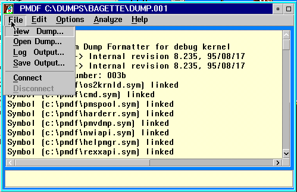

The File pull-down menu offers the following options:
New Dump
Notes:
For diskette dumps the DUMPDATA.nnn files may be copied for a directory on the hard drive and decompressed from there.
PMDF has the ability to decompress diskette images created by OS2IMAGE without re-creating the original diskettes. To use this facility each of the image file must be named image.nnn where nnn is a numeric sequence number that corresponds to the disk number.
The following diagram illustrates the File pull-down menu options.